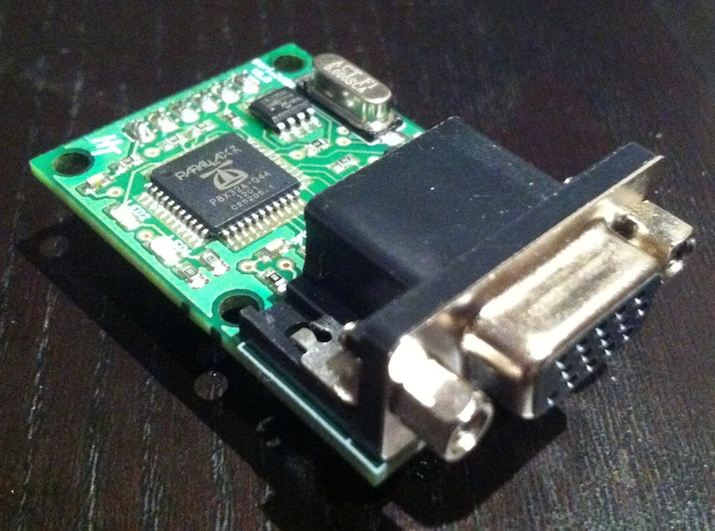
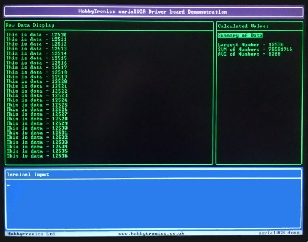

Пощупал интересную платку – Serial VGA. Позволяет через RS-232 (TTL) на VGA экране (800x600) организовать многооконный текстовый вывод.

Максимальный размер одного окна 100x50 символов при 64 цветах, и можно
одновременно создавать до 9 окон. Информация в каждое окно выводится
независимо. Управляющие команды передаются через специальные
^[-последовательности.

В целом – очень удобно для проектов на микроконтроллерах, когда лень возиться с выводом VGA самостоятельно, а вывод в формате RS-232 можно написать на коленке. Я также подключал это к Raspberry Pi. Единственное, могу сказать, что на скорости более 9600 лучше поддержать сигнал CTS, иначе символы могут пропадать, так как девайс не успевает.